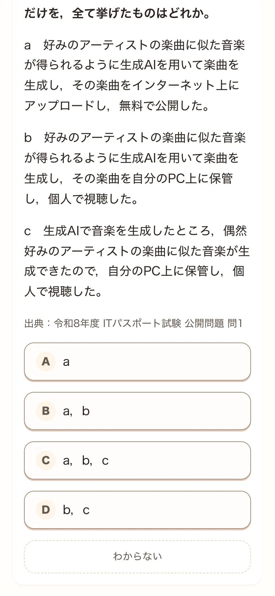
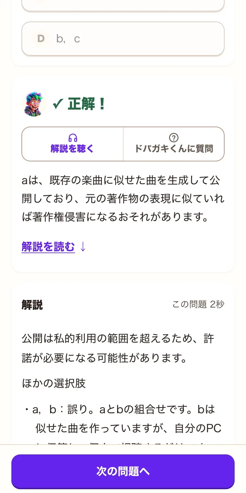
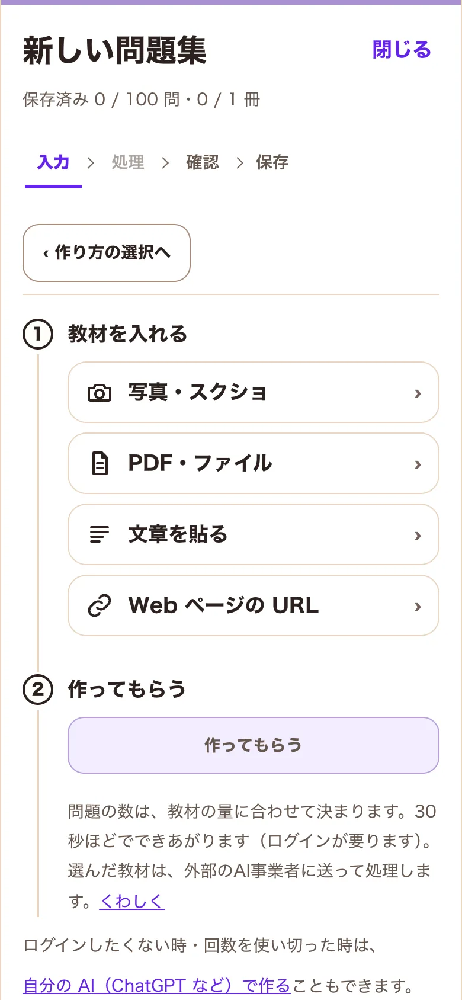
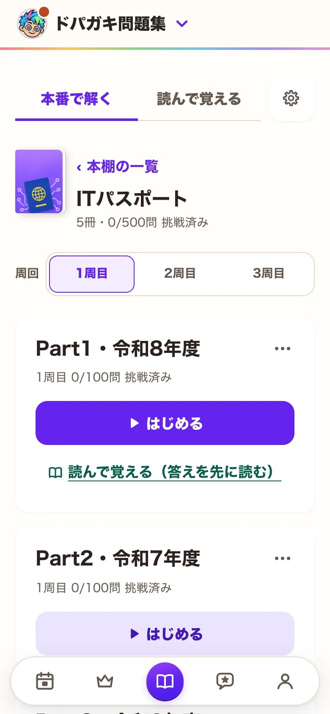
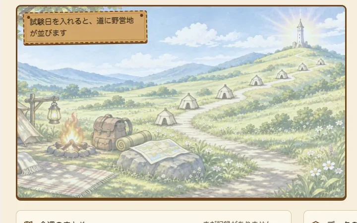
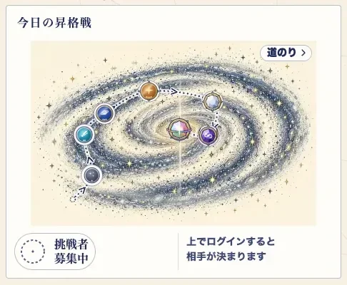
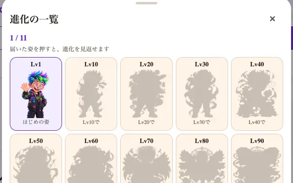
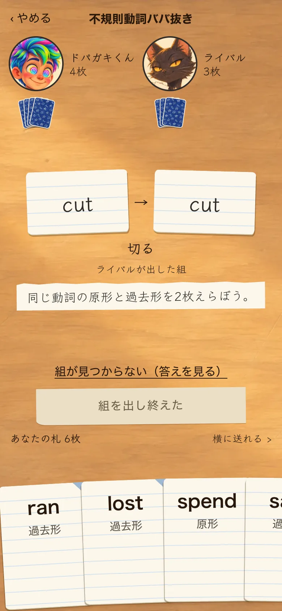
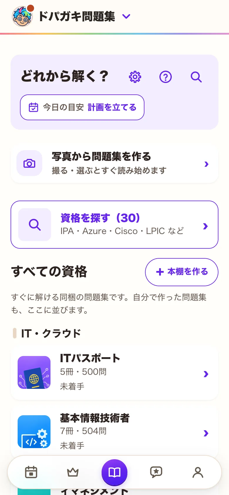

資格の受験生
年度別の過去問を
本番と同じ4択で解いて、間違えた問題だけを解き直せます。
ITパスポート・基本情報・FP3級・登録販売者 など
ITパスポートや基本情報の過去問が、最初から2,183問。ブラウザで開けば、登録なしですぐ解けます。覚えたいことを自分の問題集にもできます。
ITパスポートの本物の過去問です。選ぶと、その場で正解と解説が出ます。アプリでも同じ動きです。
生成AIを用いた生成物の取扱いに関して，既存の著作物の著作権者から許諾を得ることが必要となる可能性のあるものだけを，全て挙げたものはどれか。
a 好みのアーティストの楽曲に似た音楽が得られるように生成AIを用いて楽曲を生成し，その楽曲をインターネット上にアップロードし，無料で公開した。
b 好みのアーティストの楽曲に似た音楽が得られるように生成AIを用いて楽曲を生成し，その楽曲を自分のPC上に保管し，個人で視聴した。
c 生成AIで音楽を生成したところ，偶然好みのアーティストの楽曲に似た音楽が生成できたので，自分のPC上に保管し，個人で視聴した。
正解：A（a）
a は、既存の楽曲に似せた曲を生成して公開しており、元の著作物の表現に似ていれば著作権侵害になるおそれがあります。公開は私的利用の範囲を超えるため、許諾が必要になる可能性があります。
b は自分の PC に保管して個人で視聴するだけで、私的使用のための複製にあたり、原則として許諾は要りません。c は偶然似ただけで元の曲に依拠しておらず、個人で視聴するだけです。
アプリなら、過去問がこの2,183問ぶん。
出典：令和8年度 ITパスポート試験 公開問題 問1（独立行政法人情報処理推進機構）。選択肢の記号はアプリと同じ A〜D に、解説はアプリの物を短くしています。
はじめての方へ
資格の受験生
本番と同じ4択で解いて、間違えた問題だけを解き直せます。
ITパスポート・基本情報・FP3級・登録販売者 など
中学生・高校生・大学生
教科書やノートの写真から、AI が4択の問題と解説を作ります。
共通テスト対策の数学Ⅰ・A、英単語も入っています
社会人の独学
スマホでも PC でも、ブラウザで開けます。1問ずつ、すきま時間に進められます。
AZ・CCNP・LPIC・簿記2級などのオリジナル問題も（一部有料）
問題数・出題順・時間は設定で変えられます。まずは変えずに始めて大丈夫です。

分からなくても、まず1つ選んでから解説を読むと、記憶に残りやすくなります。

AI で作るのはログイン（Google アカウント）が要り、1日に使える回数に上限があります。できた問題は保存する前に確かめてください。人に見せてはいけない資料は入れないでください。

「読んで覚える」の結果は、ふだんの成績には数えません。理解を先にしたい時に使ってください。

無料
0円
同梱の過去問・英単語は全部。自分の問題集は1冊・合計100問まで。
プラス
月1,000円（税込）
自分の問題集の冊数・問題数の上限なし。有料の冊も追加料金なしで解ける。
先着100人
プラス 0円
ブラウザのマイページの「ログインする」から Google アカウントでログインした人から順に、2026年12月31日までプラスが無料。カードの登録は要らず、すぎると無料に戻ります（自動で請求されません）。
先着の残りの人数は アプリの紹介ページ で確かめられます（2026年11月18日に残り93人）。すでに有料プランを使っている方、招待などでプラスと同じ利用権を持っている方は対象外です。値段はすべて税込です。
同じ問題集を、使う場所に合わせて開けます。解いた記録は、基本は端末ごとに保存されます。別の端末へ移すときは、本棚の「バックアップを保存」で書き出して読み込みます。
PC・スマホ・タブレット
開くだけで使えます。スマホはホーム画面に追加できます。
iPhone
App Store で「ドパガキ問題集」。
Apple シリコンの Mac
メニューバーに常駐し、勉強のリマインドも出せます。macOS 11 以降。
Apple、Apple のロゴは、米国その他の国で登録された Apple Inc. の商標です。App Store は Apple Inc. のサービスマークです。
横にすべらせて見られます（6枚） →

試験日を入れると、道のりと今日の目安が出ます。

ログインすると、毎日の昇格戦でほかの人と競えます。

解くほど経験値がたまり、ドパガキくんが進化します。

ババ抜き・ビンゴ・神経衰弱で、遊びながら覚えます。

スマホのブラウザでもそのまま使えます。ホーム画面に追加でき、iPhone アプリと Mac 版もあります。
作った1冊を「書き出す」でファイルにして、友だちに渡せます。受け取る人が無料で、すでに自分の問題集が1冊あるときは、先に消すかプラスにすると読み込めます。
アプリに入っている ITパスポート・基本情報技術者・情報セキュリティマネジメント・登録販売者・FP3級の過去問 2,183問と、英単語などは、登録も支払いもなしで解けます。ほかにも宅建士・簿記3級・英検2級・日本語教員試験・CCNA・AZ-900 など、「有料」の札が付いていない冊は無料で、有料の冊も最初の Part は無料で試せます。自分で作る問題集は、無料だと1冊・合計100問までです。
Google アカウントでログインします。解くだけならログインは要りません。AI で問題を作る・ランキングに参加する・先着のプラス無料を受け取る時に使います。
ブラウザで Google アカウントでログインすると、先着順で自動的に付きます（iPhone アプリの中では受け付けていません）。2026年12月31日まで使えて、カードの登録は要りません。期限がすぎると無料プランに戻り、自動で請求されることはありません。すでに有料プランを使っている方は対象外です。
入れられます。iPhone は Safari の共有メニューから「ホーム画面に追加」、Android の Chrome はメニューの「アプリをインストール」から。iPhone アプリ（App Store）と Mac 版もあります。
問題と学習記録は、その端末のブラウザに保存されます。ブラウザのデータを消す前や端末を替える前は、本棚の「バックアップを保存」で書き出しておくと安心です。
1つの契約で5台までです。使わない端末は「契約の確認・解約」で外せます（外した端末は24時間使えず、外せるのは7日間に3回までです）。
AI のボタンを押したときだけ、その部分の文章や、選んだ写真・PDF・Web ページの中身を、アプリのサーバーから外部の AI のサービスへ送って処理します。AI の答えは間違えることがあるので、取り込む前に確かめてください。学校や会社の資料を入れる時は、そこの決まりに従ってください。
ドパガキ問題集のご紹介（2026年11月） 運営者・問い合わせ先（特定商取引法に基づく表記） 利用規約 プライバシーポリシー
TOEIC は ETS の登録商標です。このページと問題集は ETS の検討や承認を受けたものではありません。